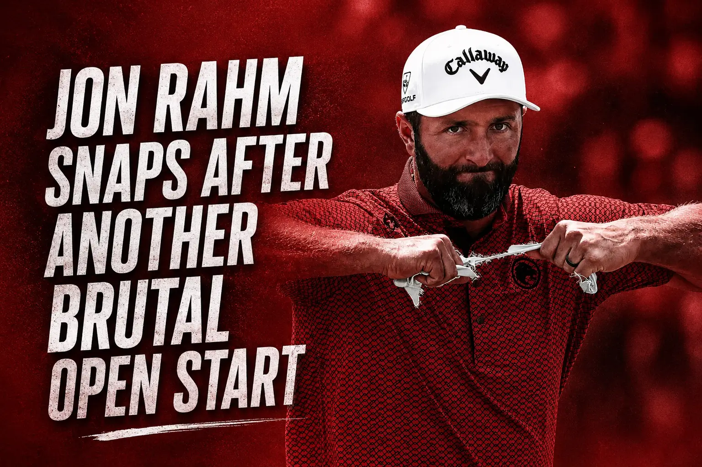
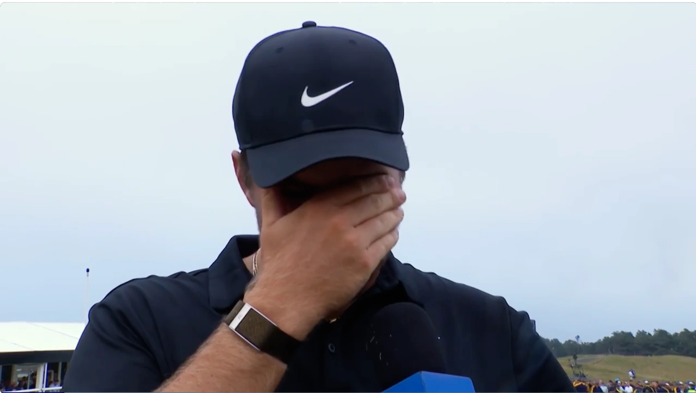

Ryder Cup 2027: Team Europe Qualifying Schedule Confirmed
The road to Adare Manor begins at The Belfry on August 27. Key dates, the points structure, Luke Donald's record and everything you need to know about the 2027 Team Europe qualifying race.

8 Big Names Missing the 2026 Solheim Cup (And Why They're Out)
From 0.9-point heartbreaks to pregnancy and broken wrists, here are 8 major stars missing the 2026 Solheim Cup at Bernardus Golf and why.

Jeeno Thitikul Leads AIG Women’s Open After 64 | GOLFRAW
Jeeno Thitikul opened with a bogey-free 64 to lead the AIG Women’s Open, while Charley Hull and Lottie Woad shot contrasting two-under 69s.

Haeran Ryu Outplays Nelly Korda With 66 at AIG Women’s Open | GOLFRAW
Haeran Ryu shot a five-under 66 to finish seven strokes ahead of Nelly Korda in round one, although Jeeno Thitikul took the AIG Women’s Open lead.

Nelly Korda Opens With a 73 at Royal Lytham | GOLFRAW
Nelly Korda shot a 2-over 73 in Round 1 of the 2026 AIG Women's Open, leaving her nine shots off the lead as she chases the career Grand Slam.

Haeran Ryu Opens With a 66 in Pursuit of Third Straight Major | GOLFRAW
Haeran Ryu shot a 5-under 66 at Royal Lytham & St Annes in Round 1 of the 2026 AIG Women's Open, staying two shots off Jeeno Thitikul's lead.

Royal Lytham Is 778 Yards Longer Than When Annika Won Here | GOLFRAW
Royal Lytham is 778 yards longer than in 2003 and has lost two shots of par. How the historic 2026 AIG Women's Open layout actually compares.

Detroit Golf Club's Full Scorecard: 12 Par 4s & a 246-Yard Par 3 | GOLFRAW
The full hole-by-hole card for the rebuilt par-70 Detroit Golf Club is out. 12 par 4s averaging 450 yards, a 246-yard par 3, and a 1906 correction.

AIG Women's Open Tee Times: Hull Gets the Awkward Draw
Korda and Ryu go out together at 8.42am Thursday. Charley Hull plays late, then early — the opposite half of the draw. Full marquee times in BST.

DeChambeau: Two Holes Cost Me The Claret Jug
DeChambeau says he was \

The PGA Tour Just Threw Out Detroit's Course History
The Tour's own fantasy analyst says all 147 players start at zero this week. Here's why, the stat that proves it, and the correction we owe you.

Bryson DeChambeau, Bobby Jones and the Line Golf Cannot Lose
A two-shot penalty became a full-blown spectacle at The Open. Bryson DeChambeau’s reaction raised a bigger question for golf.

Fleetwood Got Within One. Then Birkdale Turned
Tommy Fleetwood got within one shot of The Open lead. Two late bogeys left Southport dreaming—and five shots back.

Jon Rahm Snaps After Another Brutal Open Start
Jon Rahm opened with another ball out of bounds, tore his glove apart, and watched his Open hopes fade in seconds.

Ryan Fox Fires 62 and Makes The Open History — Raw Take
Ryan Fox matched the major record with a 62 at Royal Birkdale as Bryson DeChambeau stayed in the fight.

Fleetwood Is Two Back. The Open Is Still Cruel — Raw Take
Tommy Fleetwood is within two shots at Royal Birkdale, but Scheffler, MacIntyre and DeChambeau are not going away.

Two 62s, 22 Minutes Apart: Herbert and Burns Tie Open Record — Raw Take
Lucas Herbert missed a 5-foot putt for golf's first-ever 61. Minutes later, Sam Burns matched his 62. How two players tied the major record on the same Open Friday.

Dan Brown Did It Again: The Smoking Englishman Leads The Open — Raw Take
Dan Brown, the chain-smoking Englishman who stunned The Open in 2024, leads the home charge again at Birkdale, while six-time major champ Rory McIlroy fights the cut.

DeChambeau Answered Faldo's 'Zero Clue' Jab With a 67 — Raw Take
Nick Faldo said Bryson DeChambeau has zero clue about links golf. DeChambeau shot 67 and fired back, while Jackson Suber, who had never seen Europe, led The Open after Round 1.

Will We See a First-Time Major Winner at Royal Birkdale? — Raw Take
Scheffler and McIlroy top the Royal Birkdale odds, but the favourite just missed a cut and The Open loves a surprise. The first-time winners who could steal the jug.

\
\

Iwai's Heartbreak at Evian: One Shot From History
She had it. For a moment, Aki Iwai had a major championship in her hands at Evian. Then it slipped, by one stroke, in front of a packed final round crowd.

Haeran Ryu's 60 at the Evian Championship Is the Lowest Round in Major History
Haeran Ryu fired an 11-under 60 in the third round of the 2026 Evian Championship, marking the lowest single-round score in golf major history across men's, women's, and senior play.

Iwai Runs Away at the Evian While Korda Sweats the Cut Line
Aki Iwai fires a clinical 8-under to build a multi-shot lead in France, while world No. 1 Nelly Korda scrambles on the cut line in her high-stakes career Grand Slam bid.

The Renaissance Club: A Course Guide to the Scottish Open's Home in North Berwick
Tom Doak's par-71 layout challenges the definition of traditional links. Read our expert course architecture guide to the Scottish Open's home in North Berwick, the signature holes, and the impact of wind.

What Is the Heroes Classic? Scheffler Headlines the Open's New Curtain-Raiser at Birkdale
Scottie Scheffler headlines the field and officially returns the Claret Jug at Royal Birkdale's new showcase event, the Heroes Classic. Learn how to get practice day tickets.

The Open 2026: How Players Qualify for Royal Birkdale, and Who Is Already In
The field for the 154th Open Championship is taking shape. Explore our GEO-optimized guide on the exemption categories, the global qualifying series, and the high-drama Monday shootout.

Trump Says Renovated East Potomac Golf Links Could Host a Major Championship: Tom Fazio DC Redesign Reality Check
Donald Trump has announced plans for a Tom Fazio redesign of East Potomac, claiming it could host a U.S. Open or Ryder Cup. We take an honest, logistical look at the feasibility of a major championship on Hains Point.

Brooke Henderson Chases a Third Major 10 Years After Sahalee, and the Story Writes Itself
Brooke Henderson sits just one shot off the lead at Hazeltine, chasing her third major title on the very week her niece Sahalee was born. Inside Sunday's high-stakes LPGA setup.

How a Quiet Donald Ross Course in Upstate New York Became a National Treasure
Tucked away by Lake Delta, Teugega Country Club ranks as one of the country's most pristine Donald Ross designs. We explore its rich history and architectural genius.

Phil Mickelson's Open Withdrawal: Inside the Milestone of His Missed Majors in 2026 at Royal Birkdale
Following his official Open withdrawal, Phil Mickelson is set to record his first year of missed majors in 2026, bypassing Royal Birkdale. We analyze the timeline and facts.

Rory McIlroy Bumps Into Nick Faldo at Royal Birkdale, and the Timing Says Everything
McIlroy turned down a $20M Signature Event to walk Royal Birkdale three weeks early — and bumped into the only man who truly understood why. Inside the most revealing off-week in golf.

Who Has Won the PGA Championship? Winners by Year and Records
A complete guide to the PGA Championship winners, from Aaron Rai in 2026 back through the modern era, plus the all-time records.

KPMG Women's PGA Matches Richest Purse in Women's Golf at $12M
The 2026 championship at Hazeltine ties the U.S. Women's Open with a historic $12 million purse. Here is what the massive payday means for the women's game.

\
Scottie Scheffler didn't dodge questions about the hostile Shinnecock crowd. Here is his honest take on the heckling and his praise for Wyndham Clark.

Ugly Win, Elite Grit: Wyndham Clark Secures Second U.S. Open Wire-to-Wire
Clark held off a charging Sam Burns and a hostile Shinnecock crowd to complete a dramatic wire-to-wire victory. Full analysis.

U.S. Open: Clark on the Brink as Sam Burns Posts the Clubhouse Number
A clutch birdie at the 16th has Wyndham Clark two shots clear with two to play. Sam Burns is in the clubhouse at 3 under. The dramatic finish is here.

U.S. Open: Clark's Massive Lead GONE, A Nail-Biter at Shinnecock
Coronation Turned Nail-Biter: After a brutal front nine, Wyndham Clark is in a dogfight with Sam Burns. Live developing story from Shinnecock.

US Open 2026 Prize Money: Full Payout Breakdown by Finish
The complete purse and prize money breakdown for the 2026 US Open. See exactly how much the winner and the rest of the field take home.

U.S. Open 2026 Final Round: Tee Times, Pairings, and How to Watch
Everything you need to follow Sunday's finish at Shinnecock Hills. Full TV schedules, streaming options, and key pairings.

Scottie Scheffler Will Play in the U.S. Open Final Pairing on His Birthday
World No. 1 Scheffler plays the final group on his 30th birthday, chasing a career Grand Slam. Can he overturn a historic six-shot deficit at Shinnecock?

Wyndham Clark Is Running Away With the U.S. Open: Six-Shot Lead After Round 3
Clark shot an even-par 70 on Saturday to push his lead to six strokes. Only Scheffler and history stand in his way on Sunday.

2026 U.S. Open Round 2 Highlights & Best Moments
Friday's best and worst at Shinnecock: record-setting moments, brutal collapses, and the shots that defined Round 2.

2026 U.S. Open Friday: Clark Sets Record, DJ Collapses
Wyndham Clark sets a Shinnecock scoring record while Dustin Johnson collapses. The full Round 2 recap.

Joaquín Niemann Breaks Silence on U.S. Open Penalty
Niemann breaks his silence on the two-shot misconduct penalty that turned his sixth hole into an 11.

U.S. Open Round 1: Wyndham Clark Breaks the Shinnecock Record
Clark's record 64 leads as the wind splits the draw and Scheffler grinds out a 72 to keep the Grand Slam alive.

Did the USGA Take the Teeth Out of Shinnecock?
Soft greens and a record 64 raise the question: did the USGA make Shinnecock Hills too easy in 2026?

Why Is the U.S. Open the Hardest Major in Golf?
Thick rough, pinched fairways, baked greens. Why the U.S. Open is built to find the player who cracks the least.

The 2026 U.S. Open at Shinnecock: What Actually Matters
The setup, the contenders, and Scheffler's Grand Slam shot at the toughest test in golf.

The Six Shots That Got Away: Greg Norman, 1996 Masters
A tactical autopsy of Greg Norman's 1996 Masters collapse and the six shots that handed Faldo the green jacket.